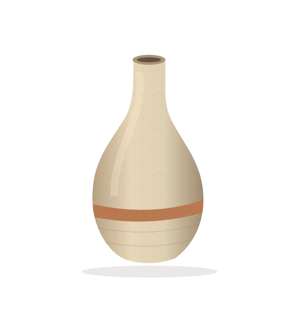

THREE FORMS / EVERYDAY POSSIBILITIES
A small family
of everyday things.
Different silhouettes. A shared feel for the material.
Original illustrations from our fictional studio.

Arc pitcher
Warm clay / pale glazeA generous curve, a useful handle. A place for water at the table or a single stem on the shelf.
Study dimensions and material
Illustrative dimensions: 24 cm high, 18 cm body width. Terracotta-colored body with a pale glaze band. No capacity or food-safety claim.

Low bowl
Olive glaze / exposed footA wide, open shape that asks for very little. A gathering place for the small things of a day.
Study dimensions and material
Illustrative dimensions: 28 cm wide, 8 cm high. Muted olive interior and exposed clay foot. The drawing describes a form, not a tested vessel.

THE QUIETER ONE
Quiet vase
Pale slip / a trace of clay
Small at the neck, full at the base. The turning lines catch the light; one warm band brings it back to the earth.
Study dimensions and material
Illustrative dimensions: 26 cm high, 16 cm at its widest. Pale slip with a warm clay-colored band. Watertightness has not been tested.
LOOKING AFTER THE REAL THING
Good objects.
Honest information.
For a real collection, ask the maker about food contact, glaze testing and care. These drawings offer a design direction, with no items for sale.
Back to the making story ↗